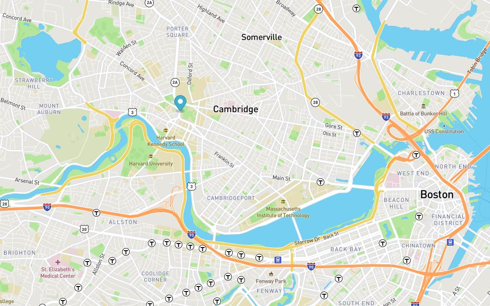

PacMan
The task in this activity was to create a pacman on demand (button click) and move these pacmen across the page.
Code Repo

Map
In this Project, the MBTA bus data was used to determine stops between Harvard and MIT. Then, an animated marker was added on the map to highlight the bus routes.
Code RepoEyes
The goal of this project was to interactively move the eyes based on the mouse position.
Code Repo